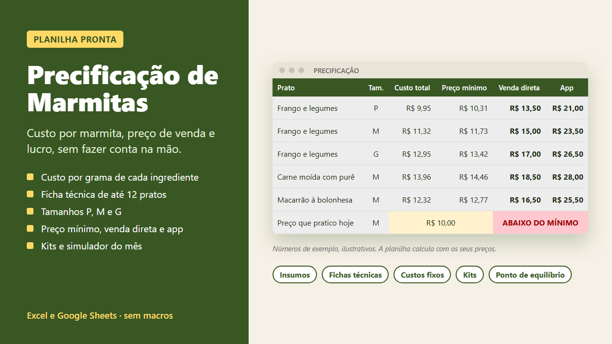
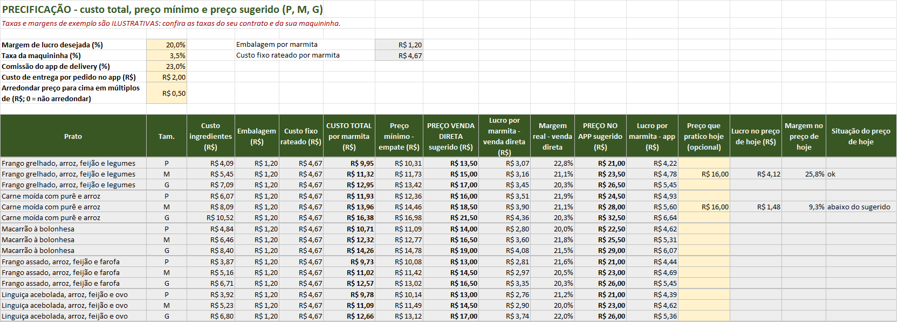
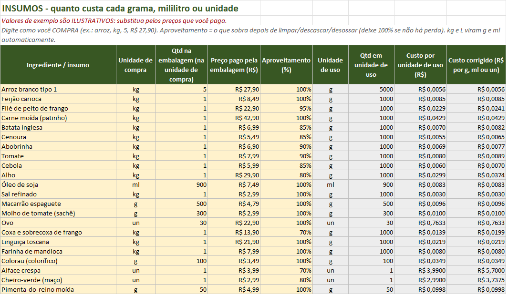
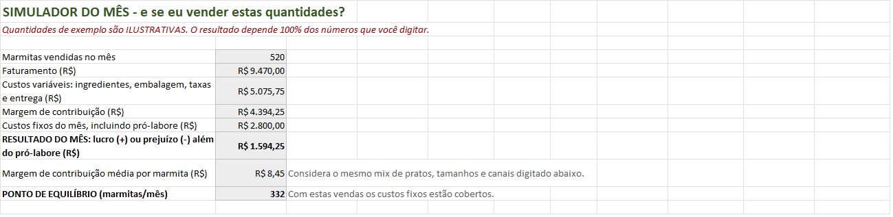

Planilha de Precificação de Marmitas
Quanto custa de verdade cada marmita que você vende? Você digita o que compra e as suas receitas; a planilha calcula o custo por marmita, o preço mínimo, o preço de venda direta e o preço para o app de delivery.

Comece pela versão grátis
Calcula 1 prato com até 15 ingredientes: custo por grama (com aproveitamento), ficha técnica, custo total, preço mínimo e preço de venda direta. Também mostra se o preço que você cobra hoje está abaixo do mínimo.
Download direto, sem cadastro e sem e-mail. O arquivo fica hospedado no GitHub.
O que a planilha calcula
- Custo por grama, ml ou unidade de cada ingrediente, já descontando a perda na limpeza (aproveitamento).
- Ficha técnica de cada prato, com ingredientes escolhidos numa lista.
- Embalagem por marmita (pote, talher, guardanapo, sacola, etiqueta).
- Rateio dos custos fixos do mês: gás, luz, água, aluguel, internet, DAS (você digita o valor do seu boleto) e o seu pró-labore.
- Preço mínimo (empate), preço de venda direta e preço para app, considerando taxa da maquininha, comissão do app e custo de entrega que você informar.
- Comparação com o preço que você cobra hoje, com alerta quando está abaixo do mínimo.



Para quem é
- Quem vende marmita em casa, em pequena cozinha ou por encomenda e quer saber se o preço cobre os custos.
- Quem vai vender por app de delivery e precisa de um preço diferente do balcão.
- Quem quer montar kits semanais ou mensais sem dar desconto no escuro.
O que a planilha NÃO faz
- Não garante lucro nem vendas. Ela organiza as contas; o resultado depende dos números que você digitar.
- Não traz tabela de preços de mercado. Os valores de exemplo são ilustrativos, não pesquisa de preços.
- Não informa valores oficiais de impostos, DAS ou taxas de apps e maquininhas. Você digita os seus.
- Não é sistema de pedidos, estoque ou emissão de nota fiscal.
- Usa um único custo de embalagem para os tamanhos P, M e G.
Versão completa
| Grátis | Completa | |
|---|---|---|
| Ingredientes cadastrados | até 15 | até 150 |
| Pratos (fichas técnicas) | 1 | 12 |
| Tamanhos P, M e G | não | sim (multiplicador ajustável) |
| Preço mínimo e venda direta | sim | sim (36 linhas) |
| Preço para app de delivery | não | sim |
| Embalagens e custos fixos calculados | você digita o valor por marmita | sim |
| Kits de 5, 10 ou 20 marmitas | não | sim |
| Simulador do mês e ponto de equilíbrio | não | sim, com gráfico |
| Conversões (kg/g, L/ml, medidas caseiras) | não | sim |

R$ 19
Pagamento único. Arquivo .xlsx enviado logo após a compra.
Como funciona
- Arquivo .xlsx sem macros, feito e testado no Excel.
- Células amarelas são para você digitar; as cinzas são calculadas e ficam protegidas sem senha (dá para desproteger quando quiser).
- Vem com uma aba COMECE AQUI com o passo a passo e com exemplos ilustrativos para você substituir pelos seus preços.
Perguntas frequentes
Preciso saber Excel?
Não. Você preenche as células amarelas e escolhe nas listas. O resto é calculado.
Funciona no Google Sheets?
A planilha foi feita e testada no Excel. Ainda não testamos no Google Sheets; se preferir usá-lo, confira os cálculos com o exemplo da aba COMECE AQUI ou use o Excel Online (gratuito com conta Microsoft).
Funciona no celular?
Abre em apps de planilha para celular, mas digitar numa tela grande é bem mais confortável.
Posso mudar a margem de lucro e as taxas?
Pode. Margem, taxa da maquininha, comissão do app, custo de entrega e arredondamento ficam no topo da aba PRECIFICAÇÃO. Use as taxas do seu contrato.
Os preços de exemplo servem para mim?
Não. Eles existem só para mostrar como a planilha funciona. Substitua pelos preços que você paga e pelos seus custos.
Como recebo a versão completa?
A venda é pelo Gumroad: logo depois do pagamento você recebe o link para baixar o arquivo .xlsx.